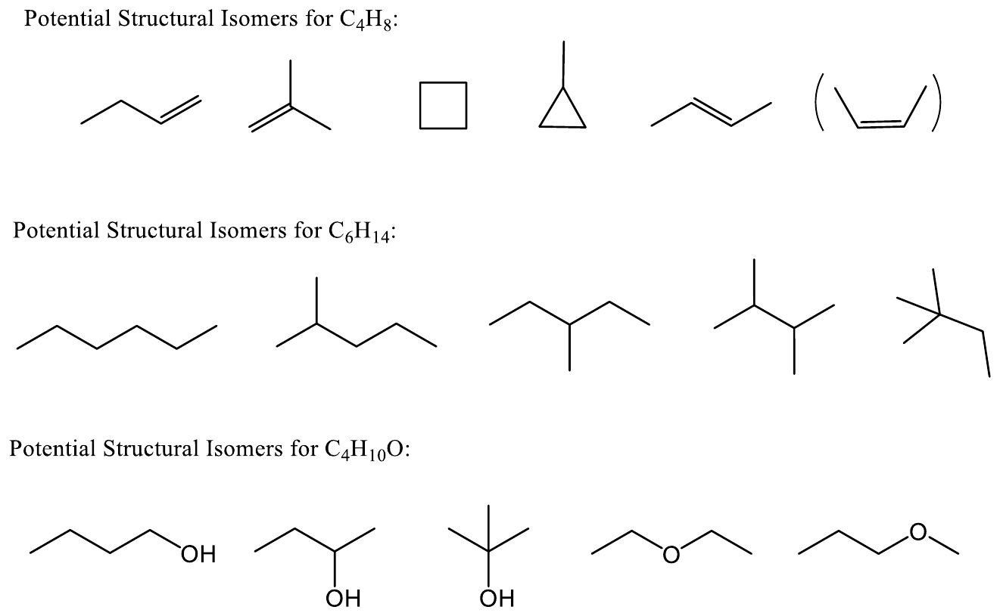
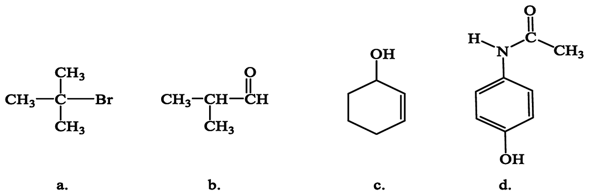
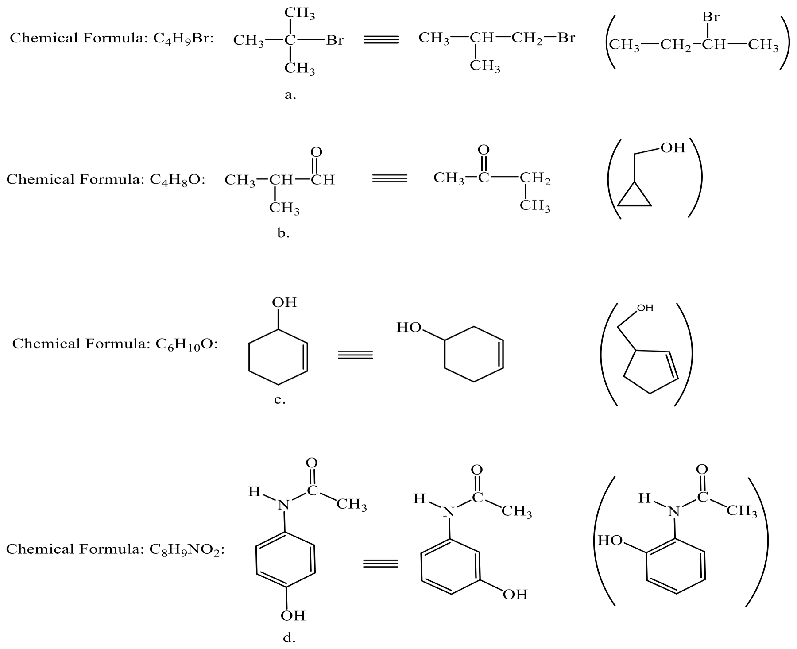
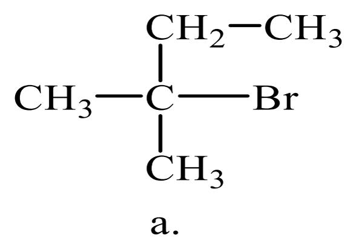
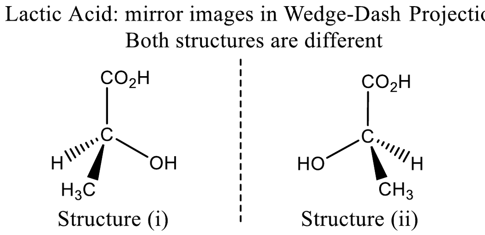
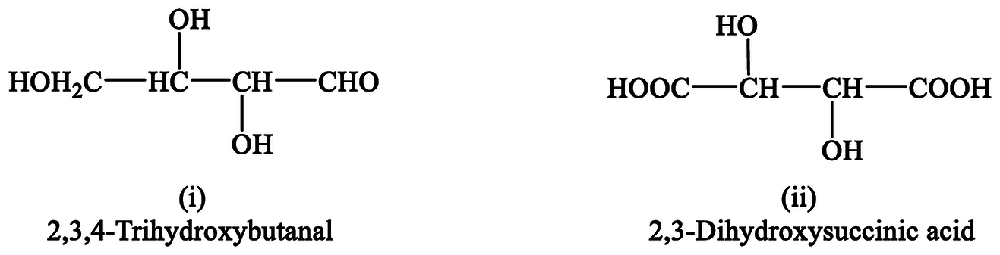
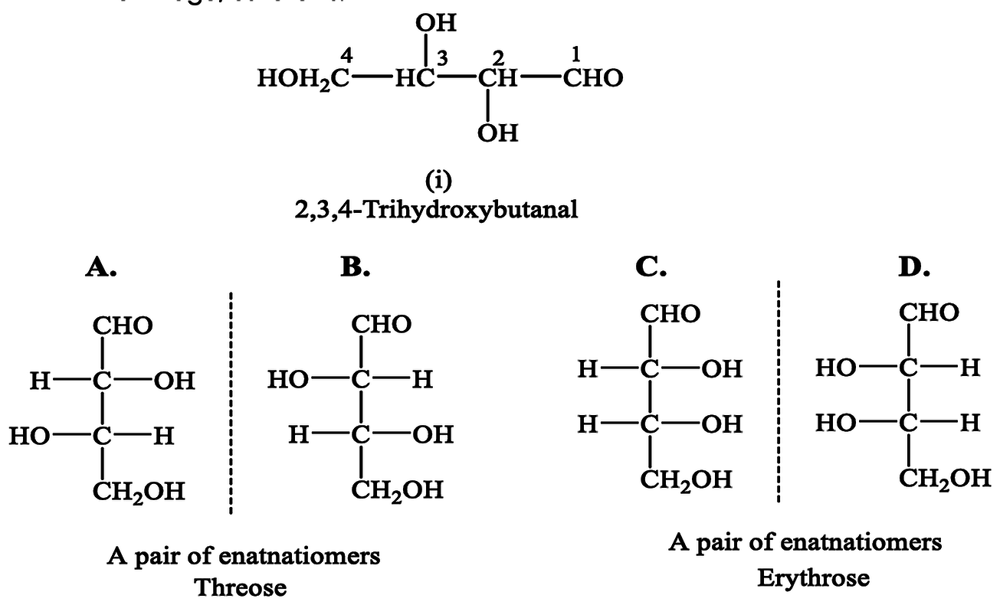
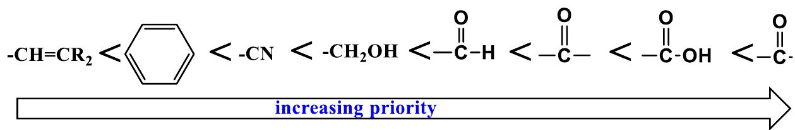

Isomers are two or more compounds having the same molecular formula, hence the same molecular weight.
Isomers share the same molecular formula (same number of each type of atom), so they also have the same molecular weight.
Question 2 of 56
Structural (constitutional) isomers have:
A. The same molecular formula but atoms bonded in a different order
B. The same order of bonding but a different arrangement in space
C. Different molecular formulas
D. Identical physical and chemical properties
A. The same molecular formula but atoms bonded in a different order
Structural isomers have the same molecular formula, but their atoms are bonded in different orders, so they have different physical and chemical properties.
Same atoms, but connected in a different order. Because the connectivity changes, the physical and chemical properties change too.
Question 3 of 56
Dimethyl ether (CH₃OCH₃) and ethanol (CH₃CH₂OH) have the same physical properties.
True
False
False
Both are C₂H₆O, but dimethyl ether is a gas with a very low boiling point, while ethanol is a liquid with a higher boiling point.
They are isomers (both C₂H₆O), but isomers do not share properties: dimethyl ether is a gas, ethanol is a liquid.
Question 4 of 56
Which of the following is NOT a structural isomer of C₄H₈?
A. 1-Butene (CH₂=CHCH₂CH₃)
B. Cyclobutane
C. Methylcyclopropane
D. Butane (CH₃CH₂CH₂CH₃)
D. Butane (CH₃CH₂CH₂CH₃)
Butane is C₄H₁₀, not C₄H₈. The other three are all C₄H₈.

Count the hydrogens: butane has 10 H (C₄H₁₀), while the other three have 8 H (C₄H₈).
Question 5 of 56
Which of the following is NOT an isomer of C₄H₁₀O?
A. 1-Butanol
B. 2-Methyl-2-propanol
C. Diethyl ether (CH₃CH₂OCH₂CH₃)
D. 1-Propanol
D. 1-Propanol
1-Propanol is C₃H₈O (only 3 carbons). The others are all C₄H₁₀O.
1-Propanol has only 3 carbons (C₃H₈O), so it cannot be an isomer of a C₄ compound.
Question 6 of 56
Which compound is a structural isomer of compound a, (CH₃)₃CBr?

A. CH₃CH(CH₃)CH₂Br
B. (CH₃)₃CCl
C. CH₃CH₂Br
D. CH₃C(CH₃)₂Br
A. CH₃CH(CH₃)CH₂Br
Compound a is C₄H₉Br. CH₃CH(CH₃)CH₂Br is also C₄H₉Br with a different bonding order. (CH₃C(CH₃)₂Br is the same compound written differently.)

Keep the formula C₄H₉Br and change where the Br is attached. Option D is the same molecule written differently, and option B changes the formula.
Question 7 of 56
Compound d (C₈H₉NO₂) has the OH at the para position. Which is a structural isomer of it?
A. The same compound with the OH at the meta position
B. The same compound without the OH group
C. The same compound drawn upside down
D. The same compound with two OH groups
A. The same compound with the OH at the meta position
Moving the OH group to the meta (or ortho) position keeps the formula C₈H₉NO₂ but changes the bonding order → structural isomer.
Moving the OH around the ring keeps the same atoms in a different order. Removing or adding an OH changes the formula.
Question 8 of 56
Which of the following pairs represent structural isomers?
A. A and C
B. A only
C. B and D
D. A, B, C and D
A. A and C
A: C₄H₁₀O and C₄H₁₀O, different order → isomers. B: same compound written in reverse. C: both C₇H₁₂O, different structures → isomers. D: both 1,2-dichlorobenzene → same compound. (Not solved in the doctor's file.)
First check that both compounds have the same formula, then check the order of bonding. B and D are traps: each pair is the same compound drawn differently.
Question 9 of 56
Which is a structural isomer of 2-bromo-2-methylbutane, shown below?

A. 1-Bromopentane
B. 2-Bromobutane
C. 2-Bromo-2-methylpropane
D. 1-Bromopropane
A. 1-Bromopentane
The compound is C₅H₁₁Br. 1-Bromopentane (CH₃CH₂CH₂CH₂CH₂Br) is also C₅H₁₁Br. The other choices have fewer carbons. (Not solved in the doctor's file.)
Count the carbons: the compound has 5. Only 1-bromopentane also has 5 carbons and one Br.
Question 10 of 56
Which pair are structural isomers?
A. CH₃CH₂CH₂OH and CH₃CH(OH)CH₃
B. CH₃CH₂OH and CH₃CH₂CH₂OH
C. C₂H₆ and C₂H₄
D. CH₄ and C₂H₆
A. CH₃CH₂CH₂OH and CH₃CH(OH)CH₃
Both are C₃H₈O with the OH on different carbons.
Rule 1: same molecular formula. Only pair A has the same formula (C₃H₈O).
Question 11 of 56
Which is NOT an isomer of C₃H₈O?
A. 1-Propanol
B. 2-Propanol
C. Ethyl methyl ether (CH₃OCH₂CH₃)
D. Propanal (CH₃CH₂CHO)
D. Propanal (CH₃CH₂CHO)
Propanal is C₃H₆O (2 hydrogens fewer).
Propanal is C₃H₆O — it has 2 fewer hydrogens than C₃H₈O.
Question 12 of 56
Propanal (CH₃CH₂CHO) and acetone (CH₃COCH₃) are structural isomers.
True
False
True
Both are C₃H₆O with a different bonding order (aldehyde vs ketone) → functional isomers.
Same formula (C₃H₆O): one is an aldehyde and the other a ketone → functional isomers.
Question 13 of 56
How many structural isomers does C₅H₁₂ have?
A. 2
B. 3
C. 4
D. 5
B. 3
Pentane, 2-methylbutane and 2,2-dimethylpropane → 3 (same as the table in the doctor's file).
Start with the 5-carbon chain, then a 4-carbon chain with one branch, then a 3-carbon chain with two branches: 3 isomers.
Question 14 of 56
1-Butanol and 2-butanol are:
A. Skeletal isomers
B. Positional isomers
C. Functional isomers
D. Geometric isomers
B. Positional isomers
Same functional group (OH) in a different position → positional isomers.
The functional group (OH) stays the same; only its position changes → positional isomers.
Question 15 of 56
Ethanol and dimethyl ether are:
A. Skeletal isomers
B. Positional isomers
C. Functional isomers
D. The same compound
C. Functional isomers
Different functional groups (alcohol vs ether) → functional isomers.
The functional group itself changes (alcohol → ether) → functional isomers.
2. Stereoisomers & Geometric Isomerism
7 questions
Question 16 of 56
What type of isomerism exists in compounds containing carbon-carbon double bonds and cyclic compounds?
A. Geometric isomerism
B. Structural isomerism
C. Meso isomerism
D. Functional isomerism
A. Geometric isomerism
Geometric isomerism.
Double bonds and rings cannot rotate, so groups are locked on the same side (cis) or opposite sides (trans).
Question 17 of 56
What is the major difference between constitutional isomers and stereoisomers?
A. Constitutional isomers are bonded in different orders; stereoisomers are bonded in the same order but oriented differently in space
B. Stereoisomers are bonded in different orders; constitutional isomers differ only in space
C. Stereoisomers have different molecular formulas
D. There is no difference
A. Constitutional isomers are bonded in different orders; stereoisomers are bonded in the same order but oriented differently in space
Structural isomers have their atoms bonded in different orders, while stereoisomers are bonded in the same order but are oriented in space differently.
Constitutional = different connectivity. Stereo = same connectivity, different 3D arrangement.
Question 18 of 56
Which of the following is NOT a type of stereoisomer?
A. Geometric isomers
B. Enantiomers
C. Diastereomers
D. Constitutional isomers
D. Constitutional isomers
Types of isomers: structural (constitutional) isomers, and stereoisomers (geometric isomers, enantiomers, diastereomers, meso compounds).
Constitutional isomers are a separate main type; they are not stereoisomers.
Question 19 of 56
Which compound can show geometric (cis/trans) isomerism?
A. CH₂=CHCH₃
B. CH₃CH=CHCH₃
C. (CH₃)₂C=CHCH₃
D. CH₂=CH₂
B. CH₃CH=CHCH₃
In 2-butene each carbon of the double bond has two different groups (H and CH₃).
Each carbon of the double bond must carry two different groups. In 2-butene each carbon has H and CH₃.
Question 20 of 56
1,2-Dimethylcyclopentane can exist as cis and trans isomers.
True
False
True
The ring cannot rotate, so the two CH₃ groups can be on the same side (cis) or opposite sides (trans).
The ring prevents rotation, so the two CH₃ groups can be cis (same side) or trans (opposite sides).
Question 21 of 56
Stereoisomers have:
A. Different molecular formulas
B. The same order of bonding but a different arrangement in space
C. A different order of bonding
D. Different molecular weights
B. The same order of bonding but a different arrangement in space
Stereoisomers: same bonding order, different orientation in space.
Stereoisomers differ only in the spatial arrangement; the bonding order is identical.
Question 22 of 56
cis-2-Butene and trans-2-butene are structural isomers.
True
False
False
They have the same bonding order → geometric isomers (stereoisomers).
The bonding order is the same, only the orientation differs → geometric isomers, which are stereoisomers.
3. Chirality & Chiral Carbon
9 questions
Question 23 of 56
Which of the following is a chiral object?
A. A hand
B. A ball
C. A cup
D. A conical flask
A. A hand
A chiral object cannot be superposed on its mirror image, e.g. hand or feet. A ball, cup and conical flask are achiral.
Your left and right hands are mirror images that cannot be superimposed → chiral.
Question 24 of 56
An achiral object can be superposed on its mirror image.
True
False
True
Achiral object can be superposed on its mirror image, e.g. a ball, cup, conical flask.
Achiral means the object and its mirror image match exactly (e.g. a ball or a cup).
Question 25 of 56
A chiral carbon is an sp³-hybridized carbon with:
A. Four different atoms or groups attached
B. Two identical groups attached
C. A double bond
D. Four identical groups attached
A. Four different atoms or groups attached
A chiral carbon (C*) is an sp³ carbon with four different atoms or groups attached to it.
Look at the carbon: four different groups attached → chiral carbon (marked C*).
Question 26 of 56
Another name for a chiral carbon is:
A. Stereocenter
B. Meso center
C. Achiral carbon
D. sp² carbon
A. Stereocenter
Also called asymmetric carbon, asymmetric center, stereocenter or stereogenic center.
Check each carbon separately: both middle carbons carry four different groups.
Question 30 of 56
3-Pentanol, CH₃CH₂CH(OH)CH₂CH₃, is a chiral molecule.
True
False
False
C-3 has two identical ethyl groups, so it is not a chiral carbon.
C-3 carries two identical ethyl groups, so it does not have four different groups.
Question 31 of 56
Which object is achiral?
A. A glove
B. A screw
C. A sphere
D. A foot
C. A sphere
A sphere can be superposed on its mirror image.
A sphere looks exactly the same in a mirror.
4. Optical Activity & Enantiomers
10 questions
Question 32 of 56
A dextrorotatory enantiomer rotates plane-polarized light:
A. To the right (clockwise)
B. To the left (counterclockwise)
C. It does not rotate light
D. In both directions
A. To the right (clockwise)
Dextrorotatory (Latin dexter, right) rotates plane-polarized light to the right (clockwise). Levorotatory rotates it to the left (counterclockwise).
Dextro = right (clockwise, +). Levo = left (counterclockwise, −).
Question 33 of 56
Which instrument measures the rotation of plane-polarized light by a chiral compound?
A. Polarimeter
B. Spectrometer
C. Thermometer
D. Barometer
A. Polarimeter
Polarimeter: instrument for measuring the rotation of plane-polarized light by a chiral compound.
A polarimeter measures how many degrees a compound rotates plane-polarized light.
Question 34 of 56
A compound that rotates plane-polarized light is called optically active.
True
False
True
Optically active indicates that a compound rotates plane-polarized light.
Optically active simply means the compound rotates plane-polarized light.
Question 35 of 56
Which property is different for a pair of enantiomers?
A. Interaction with plane-polarized light
B. Boiling point
C. Molecular weight
D. Molecular formula
A. Interaction with plane-polarized light
Chemical property: interactions with other chiral substances. Physical property: interactions with plane-polarized light.
Enantiomers are almost identical; they differ only with plane-polarized light and with other chiral substances.
Question 36 of 56
Which of the following is NOT a property of enantiomers?
A. They are non-superimposable mirror images
B. They rotate plane-polarized light in opposite directions
C. They have a plane of symmetry
D. They differ in their interactions with other chiral substances
C. They have a plane of symmetry
Enantiomers do NOT have a plane of symmetry. They are non-superimposable mirror images, rotate light in opposite directions, have almost identical properties and differ with other chiral substances.
Enantiomers have NO plane of symmetry — that is why they are chiral.
Question 37 of 56
L(+)-Lactic acid is produced in muscles during exercise. Where is D(−)-lactic acid found?

A. Sour milk
B. Blood
C. Muscles
D. Sea water
A. Sour milk
D(−)-Lactic acid is found in sour milk. The two forms are a pair of enantiomers (C₃H₆O₃).
L(+)-lactic acid is in muscles; D(−)-lactic acid is in sour milk.
Question 38 of 56
Compounds having the same order of bonded atoms but differing only in the direction of rotation of plane-polarized light are:
A. Constitutional isomers
B. Diastereomers
C. Enantiomers
D. Geometric isomers
C. Enantiomers
Enantiomers. (Not solved in the doctor's file.)
Same bonding order + the only difference is the direction of rotation of light → enantiomers.
Question 39 of 56
An enantiomer rotates plane-polarized light +12°. Its mirror image rotates it:
A. +12°
B. −12°
C. 0°
D. +24°
B. −12°
Same magnitude, opposite direction.
Enantiomers rotate light by the same amount in opposite directions.
Question 40 of 56
A pair of enantiomers have different boiling points.
True
False
False
Enantiomers have almost identical physical properties.
Enantiomers have the same boiling point, melting point and solubility.
Question 41 of 56
Which molecule is optically active?
A. CH₃CH(OH)CH₂CH₃
B. CH₃CH₂CH₂OH
C. CH₃OH
D. CH₃CH₂OCH₃
A. CH₃CH(OH)CH₂CH₃
2-Butanol has a chiral carbon.
Only the molecule with a chiral carbon (2-butanol) rotates plane-polarized light.
5. Diastereomers & Meso Compounds
15 questions
Question 42 of 56
How many stereoisomers are expected for compound (i), 2,3,4-trihydroxybutanal?

A. 2
B. 3
C. 4
D. 8
C. 4
It has 2 dissimilar chiral carbons (C-2 and C-3): 2ⁿ = 2² = 4 isomers.

Two different chiral carbons → 2ⁿ = 2² = 4 stereoisomers.
Question 43 of 56
In the stereoisomers of compound (i) shown below, A and C are:
A. Enantiomers
B. Diastereomers
C. Meso compounds
D. The same compound
B. Diastereomers
A and B are enantiomers; C and D are enantiomers. A and C, A and D, B and C, B and D are diastereomers (stereoisomers that are not mirror images).
A and C are stereoisomers but not mirror images → diastereomers.
Question 44 of 56
How many different stereoisomers does compound (ii), 2,3-dihydroxysuccinic acid, have?
A. 2
B. 3
C. 4
D. 8
B. 3
2 similar chiral carbons → 2² = 4 expected, but G and H are the same meso compound → 2 enantiomers + 1 meso form = 3.
The two chiral carbons carry the same groups, so two of the four structures are the same meso compound → 3.
Question 45 of 56
In the stereoisomers of compound (ii), G and H are:
A. Enantiomers
B. Diastereomers
C. The same meso compound
D. Geometric isomers
C. The same meso compound
G and H have an internal plane of symmetry, so they are the same compound (meso compound).
G and H have an internal plane of symmetry, so they are one and the same meso compound.
Question 46 of 56
A meso compound:
A. Has an internal plane of symmetry and is optically inactive
B. Has only one stereocenter
C. Rotates plane-polarized light
D. Is a pair of enantiomers
A. Has an internal plane of symmetry and is optically inactive
A meso compound requires at least two stereocenters, contains an internal plane of symmetry, and is achiral (does not rotate plane-polarized light).
In a meso compound the two halves mirror each other and cancel out, so it does not rotate light.
Question 47 of 56
Which Fischer projection is the meso form?
A. I
B. II
C. III
D. None
B. II
II has an internal plane of symmetry: the upper and lower halves are mirror images of each other.
Draw a horizontal line through the middle of II: the top half is the mirror image of the bottom half.
Question 48 of 56
In the same question, which pair are enantiomers?
A. I and II
B. I and III
C. II and III
D. None
B. I and III
I and III are mirror images → enantiomers. I and II; II and III are diastereomers.
Between I and III every H and OH is switched → mirror images → enantiomers.
Question 49 of 56
Which molecule is the meso form?
A. I
B. II
C. III
D. None
A. I
In I all OH groups are on the same side → internal plane of symmetry between C-3 and C-4 → meso. (Not solved in the doctor's file.)
In I all OH groups are on the same side, so the top half mirrors the bottom half → meso.
Question 50 of 56
In the same question, II and III are:
A. Enantiomers
B. Diastereomers
C. Meso forms
D. The same compound
A. Enantiomers
Every OH is switched between II and III → mirror images → enantiomers. I with II, and I with III, are diastereomers.
Every OH is switched between II and III → mirror images → enantiomers.
Question 51 of 56
How many stereoisomers would you expect for the molecule shown below?
A. 2
B. 4
C. 8
D. 16
E. 32
C. 8
3 chiral carbons and no symmetry (COOH at one end, CH₃ at the other): 2³ = 8. (Not solved in the doctor's file.)
Count the chiral carbons (3). The two ends are different (COOH and CH₃), so there is no meso form: 2³ = 8.
Question 52 of 56
What is the maximum number of stereoisomers for a compound with 4 chiral carbons?
A. 4
B. 8
C. 16
D. 32
C. 16
2⁴ = 16
Use 2ⁿ with n = 4.
Question 53 of 56
How many stereoisomers does 2,3-dichlorobutane (CH₃CHClCHClCH₃) have?
A. 2
B. 3
C. 4
D. 8
B. 3
2 similar chiral carbons → a pair of enantiomers + 1 meso form = 3.
Same pattern as 2,3-dihydroxysuccinic acid: two similar chiral carbons → a pair of enantiomers + 1 meso form.
Question 54 of 56
2-Bromo-3-chlorobutane (CH₃CHBrCHClCH₃) has a meso form.
True
False
False
The two chiral carbons are dissimilar (Br vs Cl), so there is no plane of symmetry → 4 stereoisomers, no meso.
Br and Cl are different, so the molecule cannot have an internal plane of symmetry → no meso form.
Question 55 of 56
Which Fischer projection is a meso compound?
A
B
A. A
B. B
C. Both
D. Neither
A. A
In A both Cl atoms are on the same side → internal plane of symmetry → meso.
Draw a line between the two carbons: in A the top half mirrors the bottom half.
Question 56 of 56
Diastereomers are mirror images of each other.
True
False
False
Diastereomers are stereoisomers that are NOT mirror images.
Mirror images = enantiomers. Stereoisomers that are not mirror images = diastereomers.
A. Restricted rotation (rigidity) about a double bond or in a ring
B. A different order of bonded atoms
C. Different molecular formulas
D. The presence of a chiral carbon
A. Restricted rotation (rigidity) about a double bond or in a ring
Geometric isomerism is a result of rigidity in molecules: there is no free rotation about the C=C double bond or about the bonds of a ring.
Rotation is blocked, so the groups are locked on one side or the other. That is what creates two different isomers.
Question 2 of 69
Geometric isomerism occurs in:
A. Alkenes and cyclic compounds
B. Alkanes only
C. Alkynes only
D. Compounds with a chiral carbon only
A. Alkenes and cyclic compounds
It occurs in two classes of compounds: alkenes (C=C) and cyclic compounds.
Both a C=C bond and a ring stop free rotation. Open-chain single bonds rotate freely, so alkanes do not show it.
Question 3 of 69
Geometric isomers have the same molecular formula and the same order of bonded atoms.
True
False
True
Geometric isomers have the same molecular formula, the same molecular weight and the same order of bonding; they differ only in the orientation of the groups in space (different configurations).
They are stereoisomers: same atoms, same connections, different arrangement in space.
Question 4 of 69
A molecule is designated cis when the two groups are:
A. On the same side of the double bond
B. On opposite sides of the double bond
C. On the same carbon atom
D. Perpendicular to the double bond
A. On the same side of the double bond
cis (Latin, “on this side”): the two groups are on the same side of the double bond. trans (Latin, “across”): on opposite sides.
cis = same side, trans = across.
Question 5 of 69
Which statement about the two isomers of 1,2-dichloroethene is correct?
A. cis-1,2-Dichloroethene boils at 60 °C, higher than the trans isomer (48 °C)
B. trans-1,2-Dichloroethene boils at 60 °C, higher than the cis isomer
C. Both isomers have the same boiling point
D. They have different molecular formulas
A. cis-1,2-Dichloroethene boils at 60 °C, higher than the trans isomer (48 °C)
cis-1,2-Dichloroethene: bp 60 °C. trans-1,2-Dichloroethene: bp 48 °C.
Geometric isomers are different compounds, so their physical properties (such as boiling point) are different.
Question 6 of 69
Rotation about a C–C sigma (single) bond is free, but rotation about a C=C double bond is restricted.
True
False
True
A sigma bond allows free rotation. Rotating about a double bond would require breaking the pi bond (the side-by-side p orbitals), so rotation is restricted.
The pi bond holds the two carbons flat and locked, like two hands holding each other.
Question 7 of 69
Molecules A and B are:
A. The same molecule
B. cis/trans isomers
C. Structural isomers
D. Enantiomers
A. The same molecule
A is the same as B.
The left carbon carries two H atoms. When one carbon of the C=C has two identical groups, there is no geometric isomerism; B is just A flipped over.
Question 8 of 69
Molecules C and D are:
A. Geometric isomers: cis-2-pentene and trans-2-pentene
B. The same molecule
C. Structural isomers
D. Not isomers
A. Geometric isomers: cis-2-pentene and trans-2-pentene
C is different from D: C is cis-2-pentene and D is trans-2-pentene.
Each carbon of the C=C has two different groups. In C the CH₃ and CH₂CH₃ are on the same side (cis); in D they are across (trans).
Question 9 of 69
Molecules E and F are:
A. The same molecule
B. cis/trans isomers
C. Structural isomers
D. Enantiomers
A. The same molecule
E is the same as F.
The right carbon carries two identical ethyl groups, so swapping sides changes nothing.
Question 10 of 69
Molecules G and H are:
A. cis-1-chloropropene and trans-1-chloropropene
B. The same molecule
C. trans-1-chloropropene and cis-1-chloropropene
D. Structural isomers
A. cis-1-chloropropene and trans-1-chloropropene
G is different from H: G is cis-1-chloropropene and H is trans-1-chloropropene.
In G, Cl and CH₃ are on the same side (cis). In H, Cl is down and CH₃ is up (trans).
Question 11 of 69
Which compound can exist as cis and trans isomers?
A. ClCH=CHCl
B. CH₂=CCl₂
C. CH₂=CHCl
D. Cl₂C=CCl₂
A. ClCH=CHCl
In ClCH=CHCl each carbon of the double bond carries two different groups (H and Cl).
Check each carbon of the C=C: if either carbon has two identical groups, no cis/trans is possible.
Question 12 of 69
Which alkene does NOT show geometric isomerism?
A. 2-Methyl-2-butene, (CH₃)₂C=CHCH₃
B. 2-Butene, CH₃CH=CHCH₃
C. 2-Pentene, CH₃CH=CHCH₂CH₃
D. 1-Chloropropene, ClCH=CHCH₃
A. 2-Methyl-2-butene, (CH₃)₂C=CHCH₃
In 2-methyl-2-butene, C-2 carries two identical CH₃ groups.
Two identical groups on one carbon means no cis/trans.
C-1 carries two H atoms, so no cis/trans isomers are possible.
Terminal alkenes (=CH₂) never show cis/trans isomerism.
Question 14 of 69
In trans-2-butene, the two CH₃ groups are on the same side of the double bond.
True
False
False
In trans-2-butene the CH₃ groups are on opposite sides; in cis-2-butene they are on the same side.
trans = across.
Question 15 of 69
cis and trans isomers have identical physical properties.
True
False
False
They are different compounds with different physical properties (for example, cis- and trans-1,2-dichloroethene boil at 60 °C and 48 °C).
Different shapes give different boiling points, melting points and polarities.
2. E / Z System & Priority Rules
19 questions
Question 16 of 69
The letter Z comes from the German word zusammen, which means:
A. Together
B. Across
C. Right
D. Left
A. Together
(Z) is from the German zusammen (“together”); (E) is from entgegen (“across”).
Z = “ze zame zide”: higher-priority groups on the same side.
Question 17 of 69
The configuration is (E) when the higher-priority atoms or groups are:
A. On opposite sides of the C=C double bond
B. On the same side of the C=C double bond
C. On the same carbon atom
D. Both hydrogen atoms
A. On opposite sides of the C=C double bond
The configuration is (Z) if the higher-priority atoms or groups are on the same side of the C=C, and (E) if they are on opposite sides.
First pick the higher-priority group on each carbon, then compare their sides.
Question 18 of 69
By sequence rule 1, which atom has the highest priority?
A. I
B. Br
C. Cl
D. F
A. I
For atoms, the sequence order is by atomic number: I (53) > Br (35) > Cl (17) > F (9).
Higher atomic number = higher priority.
Question 19 of 69
What is the configuration of molecule (ii), 1-bromo-2-chloro-2-fluoro-1-iodoethene?
A. (Z)
B. (E)
C. It has no E/Z configuration
D. Cannot be decided
A. (Z)
On the left carbon I > Br; on the right carbon Cl > F. I and Cl are on the same side of the C=C, so the compound is (Z)-1-bromo-2-chloro-2-fluoro-1-iodoethene.
I and Cl are the higher-priority atoms and both are at the bottom, so Z.
Question 20 of 69
In molecule (i), which group on the right-hand carbon has the higher priority?
A. –CH₂CH₂CH₂Cl
B. –CH₂CH₂CH₃
C. They have equal priority
D. It cannot be determined
A. –CH₂CH₂CH₂Cl
Both groups start with C, then (C,H,H), then (C,H,H). At the end, one carbon carries Cl and the other carries only H, so –CH₂CH₂CH₂Cl has the higher priority (rule 4).
When the first atoms tie, move outward along the chain until you find the first difference.
Question 21 of 69
What is the configuration of molecule (i), 7-chloro-3-methyl-4-propylhept-3-ene?
A. (Z)-7-chloro-3-methyl-4-propylhept-3-ene
B. (E)-7-chloro-3-methyl-4-propylhept-3-ene
C. It has no E/Z configuration
D. cis only, not E/Z
A. (Z)-7-chloro-3-methyl-4-propylhept-3-ene
Left carbon: –CH₂CH₃ > –CH₃. Right carbon: –CH₂CH₂CH₂Cl > –CH₂CH₂CH₃. Both higher-priority groups are on the top side, so the configuration is (Z).
Ethyl beats methyl, and the chloro chain beats propyl. Both winners are on top, so Z.
Question 22 of 69
By sequence rule 3 (isotopes), which has the higher priority?
A. Deuterium (D, ²H)
B. Hydrogen (H, ¹H)
C. They are equal
D. It depends on the position
A. Deuterium (D, ²H)
For isotopes of the same element, the higher mass number has the higher priority: D (²H) > H (¹H).
Same atomic number, so the heavier isotope wins.
Question 23 of 69
In (E)-3-methyl-2-pentene, why does the ethyl group have a higher priority than the methyl group?
A. Its carbon carries (C,H,H) while the methyl carbon carries (H,H,H)
B. Ethyl is attached by an oxygen atom
C. Methyl has a higher atomic number
D. Ethyl contains a double bond
A. Its carbon carries (C,H,H) while the methyl carbon carries (H,H,H)
Both groups are attached through carbon. At the next atoms, ethyl has two H's and one C, while methyl has three H's, so ethyl has the higher priority.
Tie on the first atom, so compare the next set: one C beats all H.
Question 24 of 69
By sequence rule 5 (multiple bonds), which group has the highest priority?
A. –COOH
B. –CHO
C. –CH₂OH
D. –CN
A. –COOH
Atoms attached by double or triple bonds are given single-bond equivalents. Increasing priority: –CH=CR₂ < phenyl < –CN < –CH₂OH < –CHO < –COR < –COOH < –COOR.

Count C=O as two O atoms. –COOH has (O,O,O), more than –CHO (O,O,H) or –CH₂OH (O,H,H).
Question 25 of 69
Which list shows the groups in order of increasing priority (lowest to highest)?
A. –H < –CH₂OH < –CO₂H < –CO₂CH₃ < –OH < –SCH₃
B. –H < –OH < –CH₂OH < –CO₂H < –CO₂CH₃ < –SCH₃
C. –H < –CH₂OH < –CO₂CH₃ < –CO₂H < –OH < –SCH₃
D. –SCH₃ < –OH < –CO₂CH₃ < –CO₂H < –CH₂OH < –H
A. –H < –CH₂OH < –CO₂H < –CO₂CH₃ < –OH < –SCH₃
Attached atoms: H (1) < C (6) < O (8) < S (16). The three carbon groups: –CH₂OH (O,H,H) < –CO₂H and –CO₂CH₃ (O,O,O). For the last tie, the –OH oxygen carries H but the –OCH₃ oxygen carries C, so –CO₂CH₃ > –CO₂H. (Not solved in the doctor's file.)
Sort by the first atom, then break ties by looking one atom further.
Question 26 of 69
What is the configuration of compound (i)?
A. No E/Z configuration
B. (E)
C. (Z)
D. cis
A. No E/Z configuration
The left carbon carries two identical CH₃ groups, so the compound cannot have E/Z isomers. (Not solved in the doctor's file.)
Two identical groups on one carbon of the C=C means no geometric isomerism.
Question 27 of 69
What is the configuration of compound (ii)?
A. (E)
B. (Z)
C. No E/Z configuration
D. cis
A. (E)
Left carbon: Br (35) > Cl (17), Br is on top. Right carbon: –SCH₃ (S, 16) > –CH₂CH₂CH₂Cl (C, 6), SCH₃ is at the bottom. The higher-priority groups are on opposite sides, so (E). (Not solved in the doctor's file.)
Compare only the attached atoms: S beats C, even though the chain has a Cl further out.
Question 28 of 69
What is the configuration of compound (iii)?
A. (Z)
B. (E)
C. No E/Z configuration
D. trans
A. (Z)
Bottom carbon: –CH₂N(CH₃)₂ > H. Top carbon: phenyl and 3-pyridyl both start with C(C,C,C); one atom further, the pyridyl ring reaches N while phenyl has only C, so pyridyl wins. Pyridyl and –CH₂N(CH₃)₂ are on the same side, so (Z). (Not solved in the doctor's file.)
The ring with N beats the plain benzene ring. Both winners are on the right side, so Z.
Question 29 of 69
What is the configuration of compound (iv)?
A. (Z)
B. (E)
C. No E/Z configuration
D. cis only
A. (Z)
Left carbon: –CH₂Cl (Cl,H,H) > –C(=O)CH₃ (O,O,C), because Cl (17) > O (8) at the first point of difference. Right carbon: –Cl > –C(=O)CH₂Cl. –CH₂Cl and –Cl are both at the bottom, so (Z). (Not solved in the doctor's file.)
Compare the highest atom first: one Cl beats two O's.
Question 30 of 69
(E)-2-Butene is the same compound as:
A. trans-2-Butene
B. cis-2-Butene
C. 1-Butene
D. 2-Methylpropene
A. trans-2-Butene
On each carbon CH₃ > H; in the E isomer the two CH₃ groups are on opposite sides, which is trans.
When each carbon has one H and one other group, E = trans and Z = cis.
Question 31 of 69
Which group has the highest priority?
A. –CH(CH₃)₂
B. –CH₂CH₃
C. –CH₃
D. –H
A. –CH(CH₃)₂
All three carbon groups tie at C. Next atoms: isopropyl (C,C,H) > ethyl (C,H,H) > methyl (H,H,H).
More carbons on the first carbon means higher priority.
Question 32 of 69
In BrCH=CHCl, if Br and Cl are on opposite sides of the double bond, the configuration is:
A. (E)
B. (Z)
C. No E/Z
D. meso
A. (E)
Br > H on one carbon and Cl > H on the other; opposite sides means (E).
Opposite = E (entgegen).
Question 33 of 69
–CHO has a higher priority than –CH₂OH.
True
False
True
–CHO counts as (O,O,H) while –CH₂OH is (O,H,H).
The C=O counts as two oxygens.
Question 34 of 69
The Z configuration always means the same thing as cis.
True
False
False
cis/trans compares identical groups; E/Z compares priorities. In (Z)-1-bromo-2-chloro-2-fluoro-1-iodoethene, for example, there are no identical groups, so cis/trans cannot even be used.
E/Z works for every geometric isomer; cis/trans only when similar groups can be compared.
3. Geometric Isomerism in Cyclic Compounds
9 questions
Question 35 of 69
In a wedge-dash drawing of a ring, a solid wedge bond means the group is:
A. Above the plane of the ring
B. Below the plane of the ring
C. In the plane of the ring
D. Always axial
A. Above the plane of the ring
A solid line (wedge) represents groups or atoms above the plane of the ring; a dashed line represents groups below the plane.
Wedge = toward you / up. Dash = away from you / down.
Question 36 of 69
A dashed bond represents a group below the plane of the ring.
True
False
True
Dashed line: below the plane of the ring. Solid line: above the plane of the ring.
Think of the dash as going behind the page.
Question 37 of 69
In cis-1,2-dimethylcyclopentane, the two CH₃ groups are:
A. On the same side of the ring (both wedges or both dashes)
B. On opposite sides of the ring
C. On the same carbon
D. In the plane of the ring
A. On the same side of the ring (both wedges or both dashes)
cis-1,2-Dimethylcyclopentane: both CH₃ groups on the same side of the ring. trans: one above and one below.
Same idea as alkenes: cis = same side of the ring.
Question 38 of 69
In trans-1,4-dimethylcyclohexane drawn with wedge-dash bonds:
A. One CH₃ is a wedge and the other is a dash
B. Both CH₃ groups are wedges
C. Both CH₃ groups are dashes
D. Both CH₃ groups are on the same carbon
A. One CH₃ is a wedge and the other is a dash
trans-1,4-Dimethylcyclohexane has one CH₃ above and one below the ring; cis-1,4-dimethylcyclohexane has both on the same side.
trans = one up, one down.
Question 39 of 69
The structure of trans-1-chloro-2-methylcyclopentane is:
A. a
B. b
C. c
D. d
E. e
D. d
Answer d: Cl (dash, below) and CH₃ (wedge, above) are on adjacent carbons and on opposite sides of the ring. a and b are cis (both dashes or both wedges); c and e are 1,3-compounds, not 1,2.
Check two things: the groups must be on neighbouring carbons (1,2) and one must be up, one down.
Question 40 of 69
1,1-Dimethylcyclohexane has cis and trans isomers.
True
False
False
Both CH₃ groups are on the same carbon, so there is no cis/trans relationship.
Cis/trans in rings needs the groups on two different ring carbons.
Question 41 of 69
If both Cl atoms in 1,2-dichlorocyclohexane are drawn with solid wedges, the compound is:
A. cis-1,2-Dichlorocyclohexane
B. trans-1,2-Dichlorocyclohexane
C. 1,1-Dichlorocyclohexane
D. Not a geometric isomer
A. cis-1,2-Dichlorocyclohexane
Both groups above the ring means the same side, which is cis.
Two wedges = cis; one wedge and one dash = trans.
Question 42 of 69
Cyclic compounds show geometric isomerism because:
A. The ring prevents free rotation about its C–C bonds
B. All rings contain a double bond
C. Rings always contain a chiral carbon
D. Rings have different molecular formulas
A. The ring prevents free rotation about its C–C bonds
The ring is rigid: its C–C bonds cannot rotate freely, so groups stay above or below the ring.
A ring locks the bonds just like a double bond does.
Question 43 of 69
1,3-Dimethylcyclobutane can exist as cis and trans isomers.
True
False
True
The two CH₃ groups are on different ring carbons, so they can be on the same side (cis) or opposite sides (trans).
Two substituents on two different ring carbons, so cis and trans are possible.
4. Conformations of Open-Chain Compounds
14 questions
Question 44 of 69
Which of the following is NOT a projection formula used to show conformations?
Lewis structures show electrons, not 3D arrangement.
Question 45 of 69
Which projection looks straight down the C–C bond, with the front carbon as a point and the back carbon as a circle?
A. Newman projection
B. Sawhorse projection
C. Fischer projection
D. Ball-and-stick formula
A. Newman projection
This is the Newman projection (iii).
Newman = looking down the bond end-on, front bonds meet at the centre, back bonds come from the circle.
Question 46 of 69
Which conformer of butane is the most stable?
A. Anti (staggered) conformer
B. Gauche conformer
C. Eclipsed conformer (CH₃ eclipsing H)
D. Conformer with eclipsed methyl groups
A. Anti (staggered) conformer
Conformer 1, the staggered “anti” conformer, has the lowest energy and is the most stable.
In the anti conformer the two big CH₃ groups are as far apart as possible (180°).
Question 47 of 69
Which conformer of butane is the least stable?
A. Anti (staggered)
B. Gauche
C. Eclipsed (CH₃ eclipsing H)
D. Eclipsed methyls (CH₃ eclipsing CH₃)
D. Eclipsed methyls (CH₃ eclipsing CH₃)
Conformer 4, with eclipsed methyl groups, has the highest energy and is the least stable.
The two CH₃ groups are directly lined up, so they crowd each other the most.
Question 48 of 69
What is the order of stability of the butane conformers?
A. Anti > gauche > eclipsed > eclipsed methyls
B. Gauche > anti > eclipsed > eclipsed methyls
C. Eclipsed methyls > eclipsed > gauche > anti
D. Anti > eclipsed > gauche > eclipsed methyls
A. Anti > gauche > eclipsed > eclipsed methyls
Order of energy: 4 > 2 > 3 > 1. Order of stability: 1 > 3 > 2 > 4 (anti > gauche > eclipsed > eclipsed methyls).
Staggered beats eclipsed. Within each pair, the one with the CH₃ groups further apart is more stable.
Question 49 of 69
In the gauche conformation of butane, the two CH₃ groups are:
A. 60° apart (staggered)
B. 180° apart
C. 0° apart (eclipsed)
D. 120° apart (eclipsed)
A. 60° apart (staggered)
Gauche: staggered conformation with the CH₃ groups 60° apart. Anti: 180° apart.
Gauche = staggered but the methyls are neighbours.
Question 50 of 69
What is the major difference between configuration and conformation?
A. Configuration is fixed in space; conformation changes by rotation about single bonds
B. Conformation is fixed in space; configuration changes by rotation
C. They are the same thing
D. Configuration depends only on the molecular formula
A. Configuration is fixed in space; conformation changes by rotation about single bonds
The major difference is in the arrangement of groups around the bonds in space: in configuration the arrangement is fixed, but in conformation it assumes different arrangements in space.
To change a configuration you must break bonds; a conformation changes just by rotating.
Question 51 of 69
Conformers can be interconverted by rotation about single bonds without breaking any bonds.
True
False
True
Conformations are different arrangements produced by rotation about single (sigma) bonds.
Rotation only, no bond breaking, so they interconvert easily.
Question 52 of 69
Arrange the following Newman projections in order of decreasing energy (highest to lowest):
A. (i) > (ii) > (iii) > (iv)
B. (iii) > (i) > (ii) > (iv)
C. (ii) > (iii) > (iv) > (i)
D. (iii) > (iv) > (ii) > (i)
E. (iv) > (ii) > (i) > (iii)
E. (iv) > (ii) > (i) > (iii)
Answer E: (iv) Br eclipsing CH₃ (highest) > (ii) eclipsed, Br and CH₃ each eclipsing H > (i) gauche, Br and CH₃ 60° apart > (iii) anti, Br and CH₃ 180° apart (lowest).
Same pattern as butane, using Br and CH₃ as the two big groups.
Question 53 of 69
For the compound shown, looking along the central CH₂–CH₂ bond, which conformer has the highest energy?
A. The eclipsed conformer with –N(CH₃)₂ and –OCOCH₃ eclipsing each other
B. The anti staggered conformer
C. The gauche staggered conformer
D. All conformers have the same energy
A. The eclipsed conformer with –N(CH₃)₂ and –OCOCH₃ eclipsing each other
As for butane: the conformer in which the two large groups (–N(CH₃)₂ and –OC(O)CH₃) are eclipsed has the highest energy; staggered conformers are lower in energy. (Not solved in the doctor's file.)
Biggest groups lined up = most crowding = highest energy.
Question 54 of 69
In ethane, the staggered conformation is more stable than the eclipsed conformation.
True
False
True
In the staggered conformation the C–H bonds are as far apart as possible, so it has lower energy.
Staggered = less crowding.
Question 55 of 69
In the anti conformation of butane, the angle between the two CH₃ groups is:
A. 180°
B. 60°
C. 0°
D. 120°
A. 180°
Anti means directly opposite: 180°.
Anti = opposite.
Question 56 of 69
Eclipsed conformations are higher in energy because:
A. Groups on adjacent carbons are closest together, causing strain
B. A bond is broken in the eclipsed form
C. They have a different molecular formula
D. They contain a double bond
A. Groups on adjacent carbons are closest together, causing strain
In eclipsed conformations the bonds on the front and back carbons line up, so the groups repel each other more.
Lined-up groups push against each other, so the energy is higher.
Question 57 of 69
Which projection shows the C–C bond drawn at an angle, as if viewed from above and to the side?
A. Sawhorse projection
B. Newman projection
C. Fischer projection
D. Lewis formula
A. Sawhorse projection
The sawhorse projection (iv) shows the C–C bond at an angle with all bonds visible.
Sawhorse looks like a little sawhorse (trestle) on its side.
5. Conformations of Cyclohexane
12 questions
Question 58 of 69
Which is the most stable conformation of cyclohexane?
A. Chair
B. Boat
C. Planar hexagon
D. Fully eclipsed
A. Chair
Chair conformation is more stable than the boat conformation.
In the chair all C–H bonds are staggered; the boat has eclipsed bonds and crowded “flagpole” H atoms.
Question 59 of 69
The boat conformation of cyclohexane is more stable than the chair conformation.
True
False
False
The chair conformation is more stable than the boat conformation.
Chair = most stable.
Question 60 of 69
In the chair conformation, axial bonds are:
A. Parallel to the ring axis, pointing straight up or straight down
B. Roughly in the plane of the ring, pointing outward
C. Always pointing up
D. Always pointing down
A. Parallel to the ring axis, pointing straight up or straight down
Axial (a) bonds point straight up or down; equatorial (e) bonds point outward around the “equator” of the ring.
Axial = vertical, like an axis. Equatorial = around the sides.
Question 61 of 69
In chair cyclohexane, each carbon carries:
A. One axial and one equatorial hydrogen
B. Two axial hydrogens
C. Two equatorial hydrogens
D. Only one hydrogen
A. One axial and one equatorial hydrogen
Each carbon has one axial (a) and one equatorial (e) H.
6 carbons, so 6 axial H and 6 equatorial H.
Question 62 of 69
Axial positions alternate up and down around the cyclohexane chair.
True
False
True
The axial H atoms alternate: up above the plane, then down below the plane, on neighbouring carbons.
Up, down, up, down around the ring.
Question 63 of 69
Which two atoms or groups are in the axial position and above the plane of the molecule?
A. Cl and CH₃
B. CN and NH₂
C. Br and Cl
D. NH₂ and OH
E. CN and Cl
E. CN and Cl
Answer E: CN and Cl are drawn with vertical bonds pointing up (axial, up). NH₂ and CH₃ are axial but point down; C₂H₅, OH, Br and H are equatorial. (Not solved in the doctor's file.)
Axial bonds are the vertical lines. Pick the vertical lines that point up.
Question 64 of 69
In the chair conformations of trans-1,2-dimethylcyclohexane, the two CH₃ groups are:
A. Both axial (a,a) in one conformer and both equatorial (e,e) in the other
B. Always one axial and one equatorial
C. Always both axial
D. Always both equatorial
A. Both axial (a,a) in one conformer and both equatorial (e,e) in the other
trans-1,2-Dimethylcyclohexane interconverts by ring flip between the a,a and the e,e conformers.
trans-1,2 = one up, one down. On adjacent carbons that means a,a or e,e.
Question 65 of 69
Which chair conformer of trans-1,2-dimethylcyclohexane is more stable?
A. e,e (both CH₃ equatorial)
B. a,a (both CH₃ axial)
C. Both are equally stable
D. The boat conformer
A. e,e (both CH₃ equatorial)
The e,e conformer is more stable, because axial CH₃ groups are crowded by the axial H atoms on the same side of the ring (1,3-diaxial interactions). (Not solved in the doctor's file.)
Big groups prefer equatorial, where they have more room.
Question 66 of 69
In methylcyclohexane, the more stable chair has the CH₃ group:
A. Equatorial
B. Axial
C. In the plane of the ring
D. It does not matter
A. Equatorial
Equatorial substituents avoid crowding with axial H atoms.
Large groups go equatorial.
Question 67 of 69
In the chair conformations of cis-1,2-dimethylcyclohexane, the two CH₃ groups are:
A. One axial and one equatorial (a,e)
B. Both axial
C. Both equatorial
D. Both in the plane of the ring
A. One axial and one equatorial (a,e)
cis-1,2 means both on the same side; on adjacent carbons this is always a,e (or e,a after ring flip).
cis-1,2 = a,e; trans-1,2 = a,a or e,e.
Question 68 of 69
When cyclohexane undergoes a ring flip, axial positions become equatorial.
True
False
True
A ring flip converts one chair into the other: every axial bond becomes equatorial and every equatorial bond becomes axial.
Ring flip swaps a and e.
Question 69 of 69
How many axial hydrogen atoms are there in chair cyclohexane?
A. 6
B. 12
C. 3
D. 0
A. 6
Cyclohexane has 12 H atoms: 6 axial and 6 equatorial.